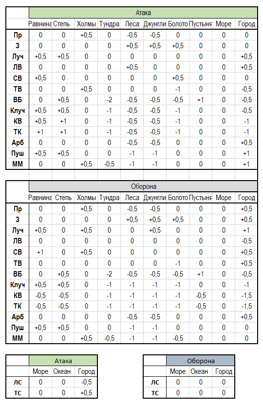

Найм армий и создание новых армий возможен в столицах стран или локациях, где есть постройка Лагерь. Предел найма (количество юнитов, которых можно нанять в новую армию) указан для каждой локации в графе Набор.
Лагеря можно строить на захваченной территории врага.
Войска и Флот можно нанимать в рамках дозволенного для страны лимита набора для каждого вида юнита. На лимит влияют наличие необходимого ландшафта, построек, внедренных инноваций или исторических особенностей определенных локаций игрового мира, этнические особенности.
- Пр: Каменоломни
- З: Бивак
- Луч: Угодье, Стрельбище
- Арб: Стрельбище
- ЛВ: 0,5 от локации
- СВ; Чертог, 0,5 от Города
- ТВ: Барак, Чертог
- ВБ: локации с ресурсом «Верблюды»
- Клуч: локации с ресурсом «Кони», Степи, Стойбище
- КВ: Пастбище, Стойбище
- ТК: Конюшня, Замок
- Пуш: Арсенал
- ММ: Мастерская
- ЛС: Верфь
- ТС: Верфь
Возможность найма определенных юнитов зависит и от наличия в стране соответствующих товаров. Например, найм КВ зависит не только от указанных выше построек, но и от наличия Коней и Оружия, ТК – Доспехов, Оружия и Коней и т.п.
В балансах указаны стоимость содержания и найма любого военного юнита, а также предельная численность их возможного найма. Если напротив юнита стоит слово «нет», это означает невозможность нанять данный тип войск/флота.
Найм/ввод кораблей возможен в строй в любой м/з, прилегающей к побережью страны или размещать в городах если в них есть Гавань или Порт, юниты – в провинциях и городах с учётом имеющегося там МП. На вражеской территории пополнение Армий может происходить только за счёт наёмников, нанятых этим ходом.
В захваченных провинциях/городах (даже с постройкой Лагерь) набор войск не возможен.
ВУ (военная усталость) – показатель истощения страны, при котором снижается лояльность населения к центральному правительству. ВУ проявляется в увеличении риска восстания (РВ) в провинциях и городах страны.
ВУ растет вследствие военных потерь и контроля врагом захваченных территорий страны. Некоторые инновации снижают скорость накопления или увеличивают скорость снижения военной усталости.
ВУ естественным образом снижается в мирное время.
Юниты могут перемещаться и сражаться только в составе Армий.
Количество Армий лимитировано (от 1 до 6) и зависит от уровня страны, инноваций и др. факторов.
К Армии может быть прикреплен персонаж — Правитель или Командир, что увеличит ее силу.
Армия может находиться как внутри городов, так и в провинциях.
Армия перемещается по карте на такое число шагов, которое указано в балансе. На скорость перемещения Армии оказывает влияние технологии, а также доля кавалерии в её составе. Запас хода Армии не может быть больше 4.
Перемещение из города в провинцию (из города в м/з) в пределах одной провинции «стоит» 1 ход движения!
Армия самостоятельно (без потребности в кораблях) перемещается по морю. Запас хода по морю равен 2 шагам. Спуск на воду (переход с суши в м/з) и выгрузка (переход с м/з на сушу) занимает 1 шага из отведенного лимита.
Количество юнитов Армии одновременно находящихся в море указан в балансе и зависит от размера торгового флота страны.
Гарнизоны — это размещенные вне армий юниты. Гарнизоны можно ставить только в городах. «Прикреплять» Полководца к гарнизонным войскам нельзя.
Пополнение созданных Армий осуществляется на 0,5 юнита любого типа, который присутствует в Армии в ход в любом месте где находится Армия. Либо за счет наёмников, которые пришли в этот ход в страну. Пополнение гарнизонов осуществляется на любое количество доступных игроку войск и любых типов.
Если Армия ведет действия вдали от собственной территории, то её сила уменьшается из-за логистики. Указанный в балансах предел снабжения показывает насколько дальше без снижения своих показателей Армии страны могут сражаться при превышении допустимой удаленности.
Ширина фронта – оптимальное кол-во юнитов, которое может вступить в бой с каждой стороны с учетом особенности окружающей местности (ландшафта). Если в бой вступает больше юнитов, чем допустимо для данных условий, то общая сила армии уменьшается на 10% за каждый юнит сверх ширины фронта.
Ширина фронта для разных ландшафтов:
- Болото – 3;
- Леса, Джунгли – 4;
- Холмы, Тундра – 5;
- Город – соответствует размеру города (округление по правилам математики до целого), но не менее 1. У штурмующего город ширина фронта в 2 раза больше;
- Пустыня – 7;
- Равнина, Степь – 10.
Для морских сражений аналогичную роль играет лимит флотилии. Он различен для разных типов акваторий – в море (внутренние водные объекты) лимит равен 3 юнитам, в Океане – 5 юнитам. Морями и Океаны показаны на карте разным цветом.
Увеличивает нормальную ширину фронта Командир с перком «Т» (Тактик).
В приведенной ниже таблице схематично указаны где (ландшафт) или при каких видах военных действий (оборона или атака, штурм и т.п.) юниты имеют бонусы и штрафы к своей номинальной силе.
Выигранные сражения ведут к увеличению военного опыта страны.
Полученные очки военного опыта (в/о) используются как условие для изучения продвинутых военных и флотских тактик, указанных в балансе, а также найма Командиров.
В зависимости от типа местности, на которой идет бой, юниты имеют разный показатель своей силы (см.таблицу выше).
В зависимости от решаемой задачи, вне зависимости от случайностей, присутствуют следующие бонусы/штрафы:
1) «Атака через реку»: -10% к общей силе. Если в составе армии есть бригада сапёров или происходит переход в провинцию, в которой есть Мост, то штрафа к силе нет.
2) «Десант с моря»: -30% к общей силе (при высадке в Болото или Город), -20% к общей силе (при высадке в Холмы, Тундру, Леса, Джунгли), -10% при высадке в другие местности.
3) «Удобство обороны»: +0,5-3 БО к общей силе. Если обороняющаяся армия принимает бой в удобной для устройства обороны местности – холмы (+1), лес (+1), джунгли (+2), болото (+1,5) – то она имеет бонус к силе.
4) «Бонус комбинированной армии» (комбо-бонус). Если в составе Армии имеются одновременно Стрелки, Пехота и Кавалерия, включая наёмников (каждый род войск более или равно 30% от числа юнитов), то такая армия получает бонус +15% к силе.
Столкновение двух враждебных Армий приводит к бою между ними.
Для обеих сторон подсчитываются боевые очки (БО).
БО сторон равны сумме сил всех входящих в армию подразделений с учетом особенности местности. Успех сражения зависит от того, чья сторона будет иметь превосходство в БО, а величины потерь – от соотношения сил сторон.
При ведении боевых действий следует разделять разные режимы боя: бой на открытой местности, штурм города и т.п.
Войска, размещенные в провинции, стоят «в поле». Войска, находящиеся в городах – в городах.
Бой на открытой местности происходит при вторжении врага в провинцию, в которой находятся войска защищающейся стороны. При этом сила обороны может быть увеличена за счет фортификационных построек провинции и особенностей местности.
Победа агрессора в бое на открытой местности дает возможность:
• Перейти в другую провинцию (продолжить движение) – см. ниже.
• Начать штурм города, если он есть в этой провинции.
Количество совершаемых армией тактических действий зависит от запаса хода Армии.
В случае проигрыша агрессора в сражении на открытой местности, его оставшиеся войска считаются отступившими в исходную провинцию и больше не могут в данный ход выполнять какие-либо действия.
В случае проигрыша боя в провинции атакованная сторона отступает в город (если он есть в этой провинции) или в другую провинцию страны.
Штурм города
При штурме происходит бой с силами врага, размещенными внутри города.
Если по стечению обстоятельств внутри города одновременно оказываются войска противников, то ведется городской бой. Нападающим в этом случае является страна, чей ход в очередности хода будет выше.
Штурм города возможен непосредственно с моря, посредством морского десанта.
Морской бой
Если в заданной м/з встречаются флоты противоборствующих стран, в ней происходит морское сражение.
Флот, выигравший бой, может продолжать выполнение порученного ему задания (дальнейшее движение, десантирование). Флот, проигравший сражение, автоматически перемещается в соседнюю м/з.
Морской десант
Морской десант осуществляется Армией, размещенной к моменту атаки на море. В состав сил морского десанта могут входить любые военные юниты страны-агрессора.
Десантирование может проводиться как в город, так и в окружающую его провинцию.
Флот оказывает поддержку армии при десанте только при захвате городов.
Организация армии и флота – это дисциплина и выучка. На практике этот показатель является коэффициентом, на который увеличивается сила войск и флота страны.
Боевой дух – моральное состояние войск. Оно может иметь решающее значение при равенстве сил сторон, а также давать преимущества при действии определенных тактик.
Окруженными считаются СУХОПУТНЫЕ войска, которые при проигрыше боя в поле не имеют возможности отступить в другую провинцию или укрыться в городе этой провинции. Войска, оставшиеся в живых после удачного штурма города, также считаются окруженными и подлежат пленению/уничтожению.
Плененные войска автоматически распускаются.
Армию можно двигать во вражеские провинции для атаки и оставлять в своих и союзных провинциях для их защиты. Передвинуть Армию можно в те вражеские провинции, которые являются соседними вашим провинциям или провинциям ваших союзников, если вы можете провести войска, используя чужие провинции.
Переход через горы не возможен.
Переход через узкие проливы на карте (отмечены красным) осуществляется через условный мост (без применения флота для десанта). При этом, бой, если он возникает при таком переходе, обсчитывается со штрафом, идентичным как при форсировании реки.
Провинция считается оккупированной, если (выполнены два условия):
— захвачена провинция
— захвачен Город/Города этой провинции.
В захваченной провинции/городе на момент окончания хода не должно быть Армий врага.
Захватчик получает автоматически доход с захваченной территории. Страна, локация которой захвачена, не получает доход и производимые ею товары.
Любая информация о провинции (состав построек, численность населения и т.п.) становятся доступными игроку только после отражения факта аннексии данной провинции в своем балансе. Общедоступная информация — рельеф, ПИ, религия и нац.состав и т.п. — доступны из карт и других источников.
Города можно захватывать в т.ч. Флотом ударом с моря. Провинции захватываются только сухопутными юнитами (в т.ч. десантом с моря).
В рамках игры страны могут выполнять следующие общие тактические задачи:
1) Совместная оборона. Войска союзников, находящиеся в одной провинции и подвергшиеся удару врага, совместно вступают с ним в бой. Объединенная армия будет в данном случае выступать под титулом той страны, которая является хозяйкой территории. По аналогии с армией, совместный оборонительный бой могут дать флоты союзников.
2) Совместная атака союзных армий в игре не предусмотрена. В данном случае (при наличии соответствующей ситуации) армии двух союзных стран совершают удар каждый в свою очередность. Однако возможна совместная атака например двух Армий игрока если они находятся в одной локации перед ударом. В этом случае обсчет боя ведется с учетом сил обоих Армий, участвовавших в совместном бое.
3) Совместная оккупация вражеской провинции союзными армиями возможна. Формальный оккупант в этом случае определяется по согласованию стран-союзниц, в противном случае провинция будет считаться оккупированной той страной, которая удерживает город провинции.
Наёмники – это юниты, которые можно покупать за деньги, не тратя на их свой МП.
В балансе юниты наёмники выделяются значком «*», например Луч* - наёмник-лучник.
Наёмники имеют постоянную силу.
Тактики дают дополнительные бонусы войскам и флоту в игре, если игрок повышает свой военный опыт до состояния, когда та или иная тактика становится ему доступной для изучения.
Для изучения тактик требуется наличие соответствующего кол-ва очков военного опыта.
Событиями в игре может предусматриваться отмена действия той или иной тактики вследствие развития военных технологий, оружия и способов ведения боевых действий, а также изменение базовой силы юнитов.